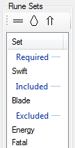
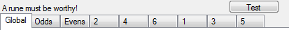
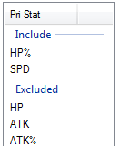
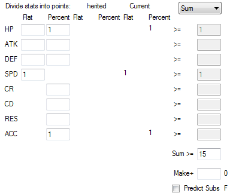
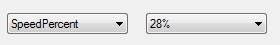
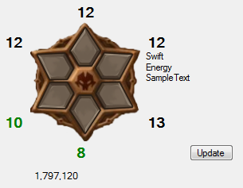
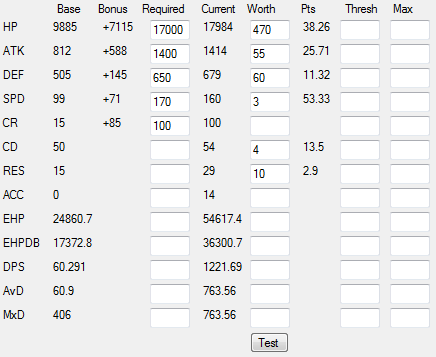

Build Specs
Here is where we define what we want the monster to have
Rune Manager
Build Testing
Options
How to tell the program what you want.
Rune Sets
What sets do you want?

/will include/exclude the selected set.
/will disallow/allow broken sets. When whole, only 4 and 2 (or 2, 2, 2).
When broken, will allow things like 4 Violent, 1 Revenge, 1 Guard.
/will require/not the selected set.
Rune Tabs
Control the slots

These tabs allow you to control what kind of runes appear in the builds.
Slot 1,3,5 can be set by Odds. 2,4,6 by Evens. Odds and Evens by Global. A nice heirarchy.
Even Stat Types

On tabs for slots 2,4,6 you can specify what Main Stat types are acceptable.
They'll default to exclude flats, but you can switch them however.
Rune Points
How to pick the runes by what stats are on them.

Here, you can assign inverse worth to stats (higher number on the left mean they are worth less).
The right side is the amount needed (after division).
If you choose "SUM", then after adding all the divided numbers, it will check the Sum>= Box.
Or Example
Okay, so you want to get some Violent runes, but you know you need health and speed.
You could say that you want greater than 5 SPD OR10% HP.
Keeping the dropdown on "OR", just put a 1 in HP Percent and SPD Flat,
then a 10 in the last box for HP, and a 5 in the SPD box.
That'd allow runes like [7 spd], [12% hp], [6 spd & 11% hp].
But not [4 spd & 9% hp].
And Example
Okay, so you want to get some Violent runes, but you know you need health and speed.
You could say that you want greater than 5 SPD AND10% HP.
Changing the dropdown to "AND", just put a 1 in HP Percent and SPD Flat,
then a 10 in the last box for HP, and a 5 in the SPD box.
That'd only allow runes like [6 spd & 11% hp].
But not [7 spd], [12% hp], [4 spd & 9% hp].
Sum Example
Okay, so you want to get some Violent runes, but you know you need health and speed.
You could say that you want the SUM of SPD and HP% to be greater than 12
Changing the dropdown to "SUM", just put a 1 in HP Percent and SPD Flat,
then in the Sum >= box, a 12
That'd allow runes like [4 spd & 9% hp], [12% hp], [6 spd & 11% hp].
But not [7 spd].
But say you wanted more SPD than HP%.
By changing the HP Percent 1 to a 2, it'd divide the stat value on the rune for HP% by 2.
Knowing that'd cut out too many good runes, also speed is generally a low value sub, so we change Sum >= to 7
That'd allow runes like [7 spd], [4 spd & 9% hp], [6 spd & 11% hp].
But not [12% hp].
Thanks for bearing with me.
This Test button will allow you to see what Rune will meet the criteria, and why.
Bits
The dropdowns at the top can select if the build should consider a leader and the value of it.

More should be coming.
This Runedial will allow you to see how many runes make the cut.

Also, how many total combinations of runes there are to test (this does include broken sets, so ¯\_(ツ)_/¯)
Clicking a rune will show you a list of acceptable runes.
Making changes to the build, you'll need to manual click the button to refresh the numbers (don't want to run on every change).
Build Scoring
Now that Rune Scoring is covered, Build scoring is pretty similar.

Here you can see the monsters base stats.
The bonus value is the difference between Base and Required.
In most of these fields, typing a 'k' (like 17k) will auto-expand to 1000 (eg. 17000).
Required is the minimum. A generated build must meet ALL of the specified values.
If you keep getting "Zero :(" then you have set your requirements too high.
Current shows the values as the might maybe appear in game possibly?
Worth is the divisor to calculate Pts.
Thresh is the point where Pts stop counting.
Eg. HP with worth 1000, 17984 would give 17.98 points.
With Thresh of 16000, 17984 would give 16.00 points.
Max is the absolute limit for ANY stat.
If you have a Max of 100 Crit Rate, and build with 101 or more will NEVER be chosen.
Max is really useful for speed tuning. It may take a few tweaks, but hey, it ain't called speed tuning for nothing.
This Test button will allow you too see what kind of builds are getting cooked up and to tune the stat scoring.